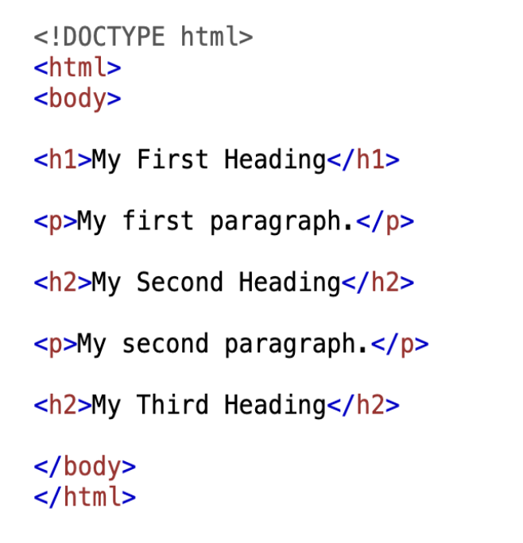
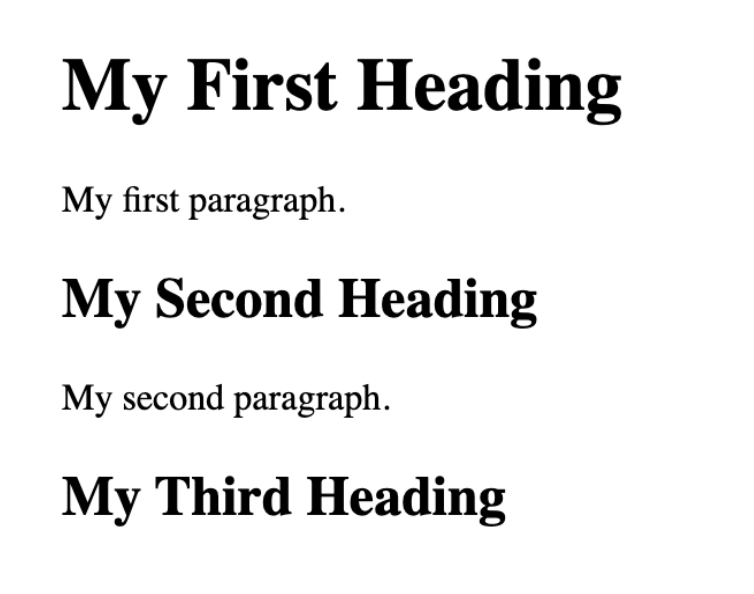

| Critères | Qualtrics | REDCap | SurveyMonkey | Google Forms |
|---|---|---|---|---|
| Accessibilité | Gratuit (institutionnel) | Gratuit (institutionnel) | Dispendieux | Gratuit |
| Existence d'une communauté d'utilisateurs | Très grande | Grande | Grande | Très grande |
| Popularité en sciences sociales | Très populaire | Populaire | Populaire | Populaire |
| Compatibilité avec d'autres outils | Facilement compatible | Facilement compatible | Demande un peu d'ajustement | Demande un peu d'ajustement |
| Transparence et réplicabilité | Faible | Faible | Faible | Faible |
| Adaptabilité et flexibilité | Très flexible | Très flexible | Plutôt flexible | Peu flexible |
6 Outils de collecte de données : du sondage au web scraping
Jérémie Drouin (University of Toronto)
Benjamin Carignan (Université Laval)
Arnaud Beaulé (Université Laval)

La révolution numérique et l’intelligence artificielle posent un défi à la recherche en sciences sociales (Burrows & Savage, 2014; Manovich, 2011). Elles ouvrent aussi une possibilité, celle d’observer les phénomènes sociaux à une échelle et avec une variété de sources qui étaient hors d’atteinte il y a vingt ans (Connelly et al., 2016; Kramer et al., 2014; Schroeder, 2014). Encore faut-il pouvoir aller chercher ces données. Au défi éthique et théorique que pose leur usage s’ajoute un défi technique, qui est celui dont ce chapitre s’occupe (Burrows & Savage, 2014).
Ce chapitre présente la méthode de l’extraction de données web, ou web scraping, qui permet de récolter de façon automatisée des données provenant de sites internet.
Les sciences sociales collectent leurs données de bien des façons, de l’entretien à l’observation en passant par les données administratives. Nous nous en tenons ici à ce qui se fait depuis un ordinateur, c’est-à-dire aux outils numériques de collecte. C’est un choix de cadrage et non un jugement sur la valeur des autres méthodes, et il explique pourquoi certaines approches très répandues ne figurent pas dans ces pages.
Le chapitre s’ouvre sur deux familles d’outils numériques déjà bien installées, les plateformes de sondage et les bases de données médiatiques. Il consacre ensuite l’essentiel de son propos à l’extraction web avec le package rvest, en montrant comment quelques bases de programmation donnent accès à des données qu’aucun de ces outils ne fournit.
6.1 Point d’observation : la collecte de données à l’ère numérique
Toute recherche empirique repose sur l’analyse d’un objet de recherche, et doit donc comprendre une réflexion sur les manières d’observer l’objet d’étude. Avant l’utilisation d’une quelconque méthode, il faut un ensemble de données à analyser sur lesquelles les différentes méthodes seront appliquées. Le type de données à analyser dépend de l’objectif analytique de la recherche entreprise, mais surtout, de l’objet de recherche. Une fois que l’on sait ce qu’on veut étudier, il faut déterminer comment l’étudier, et ultimement, acquérir les données nécessaires à l’analyse. Les sciences sociales reposent sur l’analyse des sociétés et des phénomènes qui les caractérisent. Les objets d’études sont multiples, tout comme les manières de les observer. Les communautés scientifiques autant qualitatives que quantitatives ont donc besoin de données qui permettent de tels types d’analyses, et il existe un immense éventail d’outils permettant la collecte de données nécessaires à la tenue de recherche en sciences sociales.
Nous présentons ci-dessous deux familles d’outils numériques particulièrement prisées en sciences sociales, celles qui servent à produire des données de sondage et celles qui donnent accès aux contenus médiatiques, ainsi que la façon dont le numérique a transformé l’acquisition de ces données. Il est important de noter que les données de sondages et les textes médiatiques se prêtent tout aussi bien aux analyses quantitatives que qualitatives. L’objectif de cette section est donc de présenter des outils qui se démarquent par la portée des données qu’ils permettent de récolter.
Les données de sondages
Plusieurs thèmes de recherche fondamentaux en sciences sociales sont traditionnellement étudiés par le biais de données de sondages. L’émergence des technologies numériques a grandement transformé la collecte de données de sondages, qui sont désormais conceptualisés et administrés de manière beaucoup plus efficace. En effet, les outils numériques permettent de créer un questionnaire, de cibler une population et de la contacter, d’entreposer les données des répondants pour ainsi les visualiser, le tout à un coût réduit et plus rapidement que s’il avait été conduit manuellement (Nayak & KA, 2019). Ainsi, les sondages en ligne ont une portée internationale, permettent le suivi des réponses dans le temps, offrent des options qui contraignent le répondant à répondre à certaines questions, et permettent d’utiliser des arbres de logique avancés que les sondages manuels ne permettent pas.
Qualtrics est l’outil le plus utilisé en sciences sociales pour l’administration de sondages, tant dans le milieu académique que dans le secteur privé. Il sert aussi au marketing et à la gestion de l’expérience client, si bien que le maîtriser est une compétence qui vaut au-delà de la recherche.
Qualtrics offre plusieurs services pratiques pour la collecte de données, avec des options flexibles pour la programmation et l’administration des sondages. Par exemple, Qualtrics s’adapte à différents formats en fonction de l’appareil du répondant (Evans & Mathur, 2018). Son principal désavantage provient de son coût d’acquisition, qui est extrêmement dispendieux. Cependant, certaines universités possèdent des licences permettant l’utilisation de l’outil par la communauté étudiante et de nombreux professeurs possèdent des comptes Qualtrics qui permettent la construction de sondage.
Bien que Qualtrics soit l’outil de sondage le plus utilisé, il convient toutefois de mentionner certaines alternatives. REDCap (Research Electronic Data Capture), développé par la Vanderbilt University, est accessible gratuitement aux institutions membres de son consortium, qui regroupe plusieurs milliers d’établissements dans le monde. Conçu initialement pour la recherche clinique et biomédicale, il est de plus en plus adopté en sciences sociales pour sa flexibilité (logique de branchement, collecte longitudinale) et sa compatibilité avec des logiciels statistiques courants tels que R, SPSS et Stata.
SurveyMonkey adopte un modèle freemium : une version de base gratuite mais limitée en fonctionnalités, et des plans payants pour les fonctions avancées. Si sa prise en main est rapide et intuitive, ses fonctionnalités avancées (exportation vers SPSS, randomisation par blocs, quotas) ne sont disponibles que sur les plans supérieurs. La plateforme est propriétaire et soulève des préoccupations quant à la confidentialité des données, notamment en ce qui a trait aux réglementations sur la protection des renseignements personnels.
Google Forms est entièrement gratuit et s’intègre à l’écosystème Google, offrant une synchronisation en temps réel avec Google Sheets. Très accessible pour des collectes simples et rapides, il présente toutefois des limitations importantes pour la recherche : logique conditionnelle basique, absence de randomisation par blocs, et impossibilité d’exporter directement vers des logiciels statistiques comme SPSS ou R.
Les données médiatiques
La recherche en sciences sociales se penche également sur l’analyse de contenu médiatique, qui permet une multitude de devis de recherche dans un grand nombre de sous-disciplines des sciences sociales. L’émergence du numérique facilite largement la récolte de données médiatiques tout en favorisant de nouvelles avenues de recherche pour les chercheurs en sciences sociales en raison de l’importante quantité de données accessibles.
À cet effet, l’outil Factiva offre un accès à l’ensemble des articles d’une panoplie de médias provenant d’une vaste sélection de pays. Le moteur de recherche est opéré par Dow Jones et offre également l’accès à des documents d’entreprises. Il donne accès à plusieurs dizaines de milliers de sources médiatiques dans le monde. Il permet de télécharger une quantité illimitée de documents RTF, un format de fichier de texte, pouvant contenir jusqu’à 100 articles chacun. En outre, les documents peuvent être sélectionnés automatiquement en cochant le bouton proposant de sélectionner les 100 articles de la page de résultat. Chaque page de résultat contient 100 articles à la fois. Enfin, Factiva permet également de filtrer les doublons. Factiva permet ainsi d’avoir accès facilement à des données utiles pour l’analyse textuelle d’articles médiatiques. Comme les textes deviennent accessibles rapidement et simplement aux chercheurs, cet outil optimise considérablement l’analyse de contenu par thèmes ou par ton. Cependant, ce ne sont pas tous les médias qui sont accessibles sur Factiva. Dans l’optique où un média recherché n’est pas trouvable sur cette plateforme, le logiciel Eureka représente une bonne alternative. Eureka se concentre principalement sur les médias francophones (autant au Québec qu’en Europe). La structure d’Eureka est similaire à celle de Factiva.
Qualtrics et Factiva couvrent des besoins précis, et les données qu’ils livrent ont été mises en forme par quelqu’un d’autre avant d’arriver au chercheur. La section suivante porte sur une autre façon de faire, qui consiste à aller chercher soi-même ce qui se trouve sur le web.
6.2 Arpentage et choix éditorial : les extracteurs de données web
Les extracteurs de données numériques, qui ont transformé la récolte de données en sciences sociales, sont des infrastructures de code permettant d’extraire des données brutes d’une source numérique. Cette section explique comment ces extracteurs peuvent être utiles dans un contexte de recherche en sciences sociales numériques.
L’émergence du numérique donne accès à des sources qui permettent d’analyser finement les phénomènes politiques contemporains. Cet accès est rarement simple. Les données parlementaires, par exemple, se trouvent sur les sites des institutions concernées, mais leur consultation peut exiger des identifiants ou un paiement, leur qualité n’est pas garantie et leur structure est souvent irrégulière. C’est là que le défi se pose pour le chercheur.
C’est dans cette optique que les extracteurs de données numériques peuvent être utiles. Il faut faire ici la distinction entre l’outil, soit l’extracteur de données, et la méthode, l’extraction web. Plus précisément, cette dernière est la méthode qui permet l’extraction de données provenant de sites web qui seront ensuite converties dans un format utile aux scientifiques. L’extracteur est l’outil qui permet cette méthode. Il sera question dans les lignes qui suivent de l’outil rvest, un package sur R, qui permet de récolter des données de site web gratuitement et efficacement.
Il faut toutefois être vigilant quant à la nature des données extraites. Avant d’extraire une quelconque information, il est absolument primordial de s’assurer que les données soient publiques, faute de quoi l’extraction serait illégale. Il est donc recommandé de prendre connaissance des termes et conditions des sites web étudiés afin de s’assurer de la légalité de l’extraction de données. Il est également important de respecter toute norme de droit d’auteur et de propriété intellectuelle ou physique des données. De plus, ce n’est pas parce que des données sont publiques qu’il est nécessairement légal de les extraire et de les utiliser en recherche. En effet, il ne faut pas faire ressortir dans les données extraites une quelconque information privée qui pourrait permettre d’identifier des individus (comme des numéros de téléphone, des adresses courriels, des codes postaux, etc.).
L’utilisation de cet outil est toutefois facilitée par l’existence d’API (Application Programming Interface) sur les plateformes exploitées. L’API d’un site ou d’une application, souvent fournie par le site, permet à une tierce partie d’avoir accès à du code expliquant le fonctionnement de la plateforme étudiée, ce qui en facilite l’extraction de données. Par exemple, Twitter/X possédait, avant les changements de direction, une API qui facilitait l’élaboration d’un extracteur. En contrepartie, Facebook ne possède pas d’API, ce qui rend l’accès à ses données beaucoup plus complexe. Une API fournit des données structurées dans un format lisible tel que JSON (JavaScript Object Notation). En raison de l’automatisation, les API réduisent les chances d’erreurs dans le processus d’extraction, elles ont tendance à maintenir une interface plus stable et conviviale. C’est un grand changement comparé aux fichiers HTML, où ces derniers ont des mises en page qui changent fréquemment de structure.
Un extracteur peut également offrir l’accès à des données médiatiques, en codant un accès à des fils RSS ou encore aux HTML des médias extraits. Les fils RSS sont des formats de données qu’il est possible de recevoir automatiquement lors de mise à jour sur un site particulier. Par exemple, La Presse change ses Unes plusieurs fois dans une même journée. En extrayant l’accès aux fils RSS, il est possible de recevoir ces mises à jour automatiquement. Ce processus accélère grandement la collecte de données.
Finalement, les API simplifient le travail de chacun par les mises à jour et maintenances. Pour être plus précis, les API, étant maintenues par les fournisseurs de services, sont modifiées au fur et à mesure que le site évolue. Par exemple, si la structure de X est modifiée, son API sera également modifiée. Cela évite à ceux demandant l’accès d’ajuster leurs scripts d’extraction pour prendre en compte les changements sur le site.
Il faut cependant être alerte de l’évolution constante de ces outils. En effet, la présence de données ouvertes et la création croissante d’API tend à modifier de manière progressive l’outil. Prenons l’exemple de l’API de X, qui a restreint les accès accordés et augmenté les coûts pour récupérer les informations sur la plateforme. Il faut donc rester à l’affût de ces possibles modifications.
En somme, les extracteurs web sont des outils qui facilitent grandement l’acquisition de données massives. Plutôt que d’avoir à payer pour des données dont la qualité n’est pas assurée, l’utilisation d’extracteurs permet un accès plus facile et précis à des données provenant de sites web. L’utilisation de ces outils peut toutefois s’avérer complexe et nécessite un certain nombre de connaissances en lien avec les langages de programmation. Le Chapitre 2 offre un survol du langage fonctionnel R, qui est utilisé par de nombreux développeurs lors de l’écriture d’extracteurs et qui permet d’utiliser le package rvest.
6.2.1 Critères de sélection
D’emblée, il convient de souligner que d’autres langages de programmation, notamment Python, offrent également des outils très performants pour le moissonnage de données sur le Web. Des bibliothèques telles que Beautiful Soup, Scrapy ou Selenium sont largement utilisées et permettent de réaliser des tâches comparables, voire plus avancées dans certains contextes. Toutefois, le présent ouvrage vise avant tout à initier les chercheurs et étudiants en sciences sociales à la programmation à l’aide de R. Dans cette optique, l’utilisation de rvest s’inscrit dans une démarche pédagogique cohérente qui permet d’intégrer les opérations de collecte, de traitement et d’analyse des données au sein d’un même environnement de travail, sans nécessiter l’apprentissage d’un second langage de programmation.
L’extracteur rvest est un outil accessible, particulièrement comme il s’agit d’un outil libre de coûts monétaires. En effet, à moins de circonstances exceptionnelles, l’extraction avec rvest est gratuite. Le coût serait plutôt dans l’acquisition de connaissances préalables en code puis dans l’apprentissage de la méthode d’utilisation. Malgré cette nuance, l’absence de coûts monétaires liés à cet outil favorise son accessibilité à l’ensemble de la communauté scientifique. Il est par exemple possible d’étudier l’opinion publique grâce à l’extraction de publications sur des médias socionumériques, plutôt que de construire et administrer des sondages coûteux (voir par exemple l’article de Barbera et al., 2015).
Additionnellement, l’outil jouit d’une grande communauté d’utilisateurs rendant accessibles leurs connaissances, ce qui favorise la diffusion des savoirs liés à l’utilisation de cet outil. De nombreux forums d’aide peuvent alors être consultés gratuitement par les chercheurs voulant se familiariser avec le package, et plus largement, l’extraction de données web. De nombreux forums sont présents sur le site Stack Overflow, et certains chapitres d’ouvrages collectifs vulgarisant l’utilisation de l’outil sont également disponibles gratuitement en ligne (voir par exemple le chapitre sur l’extraction web de R for Data Science, qui présente comment utiliser l’outil rvest (Wickham et al., 2023)). Bien que des outils comme Qualtrics et Factiva aient également un grand nombre d’utilisateurs, ces outils ne se démarquent pas par la transparence et le partage de leur communauté utilisatrice.
Les extracteurs sont des outils de recherche très en vogue dans la communauté des sciences sociales. La possibilité d’obtenir une quantité importante de données de manière efficace et gratuite représente une opportunité largement exploitée par les chercheurs en sciences sociales, comme en témoigne l’émergence de cours dédiés à l’extraction web dans de nombreuses écoles méthodologiques de renom, telles qu’ICPSR ou ECPR.
En fin de compte, cette méthode, avec le logiciel R, via l’outil rvest permet de récolter des données qui pourront ensuite être traitées et exploitées avec R, ce qui favorise donc la compatibilité de l’outil. De plus, les données extraites peuvent être exportées dans de nombreux formats tels que des fichiers .csv, .RDS, .xlsx, et plus encore.
rvest est enfin très adaptable. Le même package sert à extraire trois lignes d’un tableau ou à parcourir des centaines de pages, et le code écrit pour un site se transpose à un autre en changeant les sélecteurs. Comme l’extraction se fait dans R, elle s’insère directement dans le script qui nettoie et analyse les données, sans passer par un format d’échange. C’est ce qui le distingue d’une plateforme fermée comme Factiva, dont on ne peut modifier ni la portée ni le format de sortie.
| Critères | Factiva | Eureka | rvest |
|---|---|---|---|
| Accessibilité | Gratuit (institutionnel) | Gratuit (institutionnel) | Gratuit |
| Existence d'une communauté d'utilisateurs | Petite | Petite | Grande |
| Popularité en sciences sociales | Populaire | Populaire | Très populaire |
| Compatibilité avec d'autres outils | Demande un peu d'ajustement | Demande un peu d'ajustement | Facilement compatible |
| Transparence et réplicabilité | Faible | Faible | Excellente |
| Adaptabilité et flexibilité | Peu flexible | Peu flexible | Très flexible |
6.3 Manuel d’instruction : utiliser rvest pour extraire des données web
La section suivante présente la méthode d’utilisation de l’outil rvest. Elle démontre comment l’outil permet d’extraire des données du web.
6.3.1 L’importance de comprendre la structure du code HTML
Afin d’être à l’aise avec les extracteurs web, et dans notre cas précis le package rvest, il peut être un atout de se familiariser avec la structure de base du langage HTML, dont l’acronyme signifie « Hypertext Markup Language ». Il s’agit d’un langage de code qui permet la description du contenu de la page web. La structure du code HTML est hiérarchique, ce qui signifie que le code est divisé en différentes sections qui occupent différents rôles. Ces sections sont délimitées par des « tags », qui définissent le début ou la fin d’une section du site. Ce sont ces différentes sections qui seront accessibles pour l’extraction, et le code HTML permet de comprendre ce qui se situe dans ces sections. La Figure 6.1 représente un exemple de base de code HTML.

Dans l’exemple ci-haut, le tag <h1> représente le titre du HTML. Le signe <p> permet de débuter le paragraphe de texte suivant le titre, et cette section devra être terminée par le sigle </p>. Les sections <p> délimitent les paragraphes écrits dans chacune des sections. Les sigles <h2> produisent une sous-section et un sous-titre, qui pourra être complémenté d’un paragraphe écrit. La Figure 6.2 démontre le texte produit par le code HTML.

La structure de base du langage HTML est somme toute simple et intuitive, et toute page web est livrée au navigateur sous cette forme. C’est ce qui rend l’extraction possible : le code HTML d’une page est accessible à partir de son URL, donc les données qu’elle affiche le sont aussi. Quiconque souhaite extraire des données de sites web gagne à se familiariser avec ce langage, et de nombreuses ressources en ligne permettent de l’apprendre.
Une nuance s’impose toutefois. Certains sites construisent leur contenu avec du JavaScript une fois la page chargée. Le HTML que reçoit read_html() ne contient alors qu’une coquille vide, et l’extraction revient les mains vides sans message d’erreur. C’est le cas de la plupart des médias socionumériques et des tableaux de bord interactifs. Devant une page qui semble ne rien contenir, il faut soupçonner ce mécanisme avant de conclure à une erreur de sélecteur. L’extraction demande alors un outil capable de simuler un navigateur, comme Selenium, ou le recours à l’API du site lorsqu’elle existe.
6.3.2 Le package rvest : son fonctionnement et ses possibilités
Cet ouvrage recommande l’utilisation du package rvest afin de récolter des données sur des pages web, qu’elles aient ou non une API. rvest est construit autour des packages xml2 et httr afin de faciliter la manipulation du HTML et XML. rvest est principalement conçu pour extraire une seule page web. Pour extraire de multiples pages, d’autres packages sont recommandés, notamment polite. Ce chapitre se concentre uniquement sur rvest.
6.3.2.1 Fonctions de base du package rvest utilisant pour exemple le site de LEGISinfo
La première étape est l’installation et le chargement des packages tidyverse et rvest dans la console de Positron. Il est important de les charger séparément car rvest ne fait pas partie des packages de base du Tidyverse. Nous installerons ce dernier car il amène des fonctions pratiques.
install.packages("rvest")
install.packages("tidyverse")
library(rvest)
library(tidyverse)Pour débuter l’extraction des données, il suffit de copier l’URL de la page web à extraire et la coller dans l’appel de la fonction read_html(). Ici, nous utilisons le site web du Parlement canadien pour extraire les données des débats parlementaires. Il est important de stocker l’URL dans l’objet html_LEGISinfo.
html_LEGISinfo <- read_html("https://www.parl.ca/legisinfo/en/bills")
html_LEGISinfoLors de l’exécution des lignes de code ci-haut, la console retournera les éléments suivants :
{html_document}
<html lang="en" xml:lang="en" xmlns="http://www.w3.org/1999/xhtml">
[1] <head>\n<meta http-equiv="Content-Type"
content="text/html; charset=UTF-8">\n<meta
...
[2] <body class="body-wrapper ce-parl vh-100">\r\n
<header class="d-print-none"><!-- ...Une fois que les éléments que l’on souhaite extraire sont déterminés, il faut les trouver dans le document HTML. Pour ce faire, il faut se référer au style CSS (cascading style sheets), langage définissant la forme visuelle d’un document HTML. Les éléments HTML sont identifiés avec des « sélecteurs CSS », ayant pour but de les regrouper pour faciliter leur extraction. Pour les bases de l’extraction, il n’est pas primordial de comprendre les détails des sélecteurs CSS. Seule la compréhension de la structure d’un document HTML est nécessaire afin de faire l’extraction d’éléments. L’important est d’être en mesure d’identifier les sélecteurs CSS liés aux éléments souhaités.
D’abord, html_elements doit être utilisé pour trouver toutes les observations souhaitées, car cette fonction retourne une liste de tous les nœuds qui correspondent à l’appel de la fonction. Le nombre d’observations est indiqué par xml_nodeset(). Comme html_element retourne seulement le premier élément qui correspond, il faut l’utiliser en deuxième, après html_elements. Cette seconde fonction a pour but de trouver les éléments qui deviendront les variables à extraire. Pour l’exemple de LEGISinfo, nous commencerons par extraire tous les éléments <a>. Comme html_elements retourne une liste, nous voulons commencer avec cette fonction.
html_LEGISinfo |> html_elements("a")Cet appel retourne les éléments suivants :
{xml_nodeset (180)}
[1] <a href="#StartOfContent" class="ce-parl-skipnav sr-only
sr-only-focusable">Skip to m ...
[2] <a href="//www.parl.ca" class="ce-parl-btn float-left text-nowrap">
Parliament of Cana ...
[3] <a href="https://visit.parl.ca/index-e.html" rel="external">\n\t\t ...Suite à l’inspection des éléments <a>, ceux qui nous intéressent sont dans la classe .bill-tile-container. Il suffit d’ajouter un point (.) avant la classe souhaitée lors de l’appel de la fonction afin de rechercher les éléments en fonction de leur classe. Les classes HTML servent à catégoriser les éléments HTML selon un style prédéterminé. Pour l’exemple de LEGISinfo, nous obtenons une liste d’éléments de classe bill-tile-container que nous allons stocker dans l’objet BillTile_LEGISinfo. Tous les éléments de cette classe auront donc une structure ou des comportements similaires entre eux.
BillTile_LEGISinfo <- html_LEGISinfo |> html_elements(".bill-tile-container")L’exécution du bloc de code ci-haut produit le résultat suivant dans la console :
{xml_nodeset (60)}
[1] <a class="bill-tile-container senate" href="/legisinfo/en/bill/44-1/s-1">
\r\n\r\n ...
[2] <a class="bill-tile-container senate" href="/legisinfo/en/bill/44-1/s-2">
\r\n\r\n ...
[3] <a class="bill-tile-container senate" href="/legisinfo/en/bill/44-1/s-3">
\r\n\r\n ...À partir de la liste d’éléments de classe bill-tile-container, nous appelons la fonction html_element. Lorsqu’elle est appliquée à une liste, cette fonction permet d’extraire la première correspondance de tous les éléments de cette liste au lieu de seulement retourner le premier nœud correspondant du document HTML. Nous cherchons à extraire ici les éléments de classe parliament-session par le biais de la ligne de code suivante :
BillTile_LEGISinfo |> html_element(".parliament-session") Ce qui produit le résultat suivant dans la console :
{xml_nodeset (60)}
[1] <div class="parliament-session">\n<span class="parl-session-number">
44th</span> Parlia ...
[2] <div class="parliament-session">\n<span class="parl-session-number">
44th</span> Parlia ...
[3] <div class="parliament-session">\n<span class="parl-session-number">
44th</span> Parlia ...Bien que moins utile pour la mise en situation actuelle, il est également possible d’extraire les éléments en fonction de leur « id attribute ». Pour ce faire, il faut mettre un hashtag (#) avant l’élément à extraire lors de l’appel de la fonction. Le « id attribute » retourne toujours un seul élément car ils sont uniques à chaque document HTML. Voici la ligne de code et le résultat produit par une telle opération :
html_LEGISinfo |> html_elements("#StartOfContent"){xml_nodeset (1)}
[1] <a id="StartOfContent" tabindex="-1"></a>Nous avons créé précédemment l’objet BillTile_LEGISinfo pour ensuite y extraire les éléments de classe parliament-session. Nous appelons cette étape l’imbrication des sélections. Lorsque la fonction html_element est appliquée à un vecteur de liste html_elements, la console retourne le premier nœud correspondant de chaque élément de la liste. Il est important d’utiliser html_element à cette étape car il retourne un NA même lorsqu’il n’y a pas d’éléments correspondants, alors que html_elements ne retournera pas la valeur manquante. Dans l’exemple de LEGISinfo, c’est ce que nous avons voulu faire pour obtenir les éléments de classe parliament-session.
Nous sommes maintenant arrivés à l’étape d’extraire les données souhaitées. C’est assez simple. Il suffit d’appliquer la fonction html_text2 sur l’appel de html_element sur l’objet à extraire, dans ce cas-ci BillTile_LEGISinfo. Il est important de prendre en compte que nous connaissons ici les éléments à extraire, car le script du document a été scruté préalablement grâce à la fonction inspect de Google Chrome ainsi que les diverses fonctions du package rvest. Afin d’extraire les autres informations souhaitées, nous allons également créer deux autres objets qui seront à leur tour extraits. Voici les différentes opérations et leurs résultats dans la console :
BillTile_LEGISinfo |> html_element("h4") |> html_text2()[1] "S-1" "S-2" "S-3" "S-4" "S-5"...BillTile_LEGISinfo |> html_element(".parliament-session") |> html_text2()[1] "44th Parliament, 1st session" "44th Parliament, 1st session"...BillTile_LEGISinfo |> html_element("h5") |> html_text2()[1] "An Act relating to railways"
[2] "An Act to amend the Parliament of Canada Act and to make
consequential and related amendments to other Acts"
[3] "An Act to amend the Judges Act"
...BillBS_LEGISinfo <- html_LEGISinfo |> html_elements(".bottom-section")
BillBS_LEGISinfo |> html_element("dd") |> html_text2()[1] "Introduced as pro forma bill"
"Senate bill awaiting first reading in the House of Commons"
[3] "Bill not proceeded with"
"Royal assent received"
[5] "Royal assent received"
"At second reading in the House of Commons"
...Bill_stage <- html_LEGISinfo |> html_elements(".progress-bar-description")
Bill_stage |> html_element("dd") |> html_text2()[1] "First reading in the Senate"
"Third reading in the Senate"
"First reading in the Senate"
"Royal assent"
"Royal assent"
[6] "First reading in the House of Commons"
"First reading in the House of
Commons" "Royal assent"
"First reading in the House of Commons" "Royal assent"
...Maintenant que nous avons tous les éléments souhaités, il ne reste plus qu’à utiliser la fonction tibble du tidyverse. Ce package permet de facilement créer des dataframes sur R. Voici le script à produire dans l’exemple de LEGISinfo, ainsi que son résultat, un dataframe contenant le numéro de projet de loi, sa session parlementaire, son nom, son statut et son dernier stage de réalisation :
Table_LEGISinfo <- tibble(
Bill = Bill_LEGISinfo |> html_element("h4") |> html_text2(),
Session = Bill_LEGISinfo |> html_element(".parliament-session") |>
html_text2(),
Name = Bill_LEGISinfo |> html_element("h5") |> html_text2(),
Status = BillBS_LEGISinfo |> html_element("dd") |> html_text2(),
Stage = Bill_stage |> html_element("dd") |> html_text2()
)Nous savons maintenant extraire des informations d’un document HTML et les ranger dans une base de données. C’est l’essentiel du travail, et un lecteur pressé peut passer directement à la conclusion du chapitre. Ce qui suit s’adresse aux plus aventureux : deux usages de rvest qui sortent du cas simple, et auxquels il sera toujours temps de revenir.
Il est possible d’extraire les éléments en fonction de leur attribut grâce à html_attr(). Un attribut est une information supplémentaire associée à une balise HTML. Voici l’attribut href qui permet d’extraire l’URL du projet de loi en question. De cette façon, il est possible de boucler sur les href afin d’extraire divers niveaux d’une page HTML. Lorsque l’extraction se fait sur plusieurs niveaux, la pratique devient de l’indexation. Cette pratique, bien que fondamentale, ne sera pas abordée en raison de sa complexité avancée. Tel que mentionné plus haut, cet ouvrage ne se concentre que sur l’extraction de base.
BillTile_LEGISinfo |> html_attr("href")La ligne de code ci-haut produit le résultat suivant dans la console :
1] "/legisinfo/en/bill/44-1/s-1"
"/legisinfo/en/bill/44-1/s-2"
"/legisinfo/en/bill/44-1/s-3"
...rvest extrait aussi les tableaux HTML, et d’une seule fonction. L’exemple qui suit est repris du chapitre sur l’extraction web de R for Data Science (Wickham et al., 2023). Il fabrique son propre tableau avec minimal_html(), une fonction qui construit un document HTML à partir de texte. Elle n’a rien à voir avec l’extraction, elle sert seulement à rendre l’exemple autonome : sur un vrai site, l’objet viendrait de read_html().
htmltest <- minimal_html("
<table class='mytable'>
<tr><th>x</th> <th>y</th></tr>
<tr><td>1.5</td> <td>2.7</td></tr>
<tr><td>4.9</td> <td>1.3</td></tr>
<tr><td>7.2</td> <td>8.1</td></tr>
</table>
")
htmltest |>
html_element(".mytable") |> html_table()L’opération précédente produit le résultat suivant dans la console :
# A tibble: 3 × 2
x y
<dbl> <dbl>
1 1.5 2.7
2 4.9 1.3
3 7.2 8.1En conclusion de cette section, lorsqu’on extrait un document HTML, il est important de ne pas se laisser intimider par la structure du document. Il ne faut pas perdre patience afin de trouver les bons sélecteurs. Ce sont des structures peu familières au début, mais on s’y habitue rapidement. Ensuite, nous recommandons d’utiliser l’outil de développeur du navigateur web afin de pouvoir trouver les sélecteurs souhaités. L’interface de Chrome est particulièrement conviviale, et est recommandée. Il suffit de cliquer sur inspect suite à un clic droit, et il est possible de chercher les éléments souhaités dans le script HTML. Finalement, avant d’extraire le contenu d’un site web, il est important de vérifier s’il n’offre pas déjà une option pour télécharger les données ! C’est le cas de l’exemple utilisé ici (LEGISinfo), où il est possible dans certains cas de télécharger les données directement sur le site web.
6.4 En terminant
Ce chapitre a pour objectif de dresser un portrait des différents outils de collecte de données mis à la disposition des scientifiques s’intéressant aux sciences sociales. Bien que non exhaustif, ce chapitre fait un survol d’outils traditionnels de récolte de données numériques en sciences sociales tels que les outils de sondages ou de récolte de données médiatiques.
Il consacre l’essentiel de son propos à l’extraction web avec rvest, parce que c’est la voie qui donne accès à des données qu’aucune plateforme ne met à disposition, et parce qu’elle place le chercheur en amont de la mise en forme plutôt qu’en aval.
Un seul chapitre ne saurait couvrir tous les outils de collecte à la disposition de la communauté scientifique. Ceux qui sont présentés ici donnent un aperçu des plateformes les plus répandues et du potentiel d’extraction que la maîtrise de R met à portée.